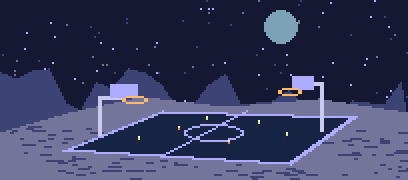
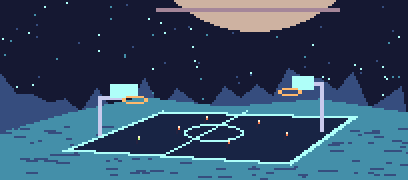
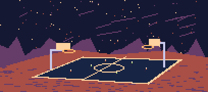

If you can see the visiting bench from your seat, check the fixture. It might be next Thursday’s game.
| Venue | From the stands | House rule |
|---|---|---|
 Crater CourtThe Moon | Section D hangs over a crater. The cheap seats get an excellent view of the expensive seats falling in. | All jump balls must be tethered to a line judge. |
 Europa GardensEuropa | Players enter through the freezer aisle. The local crowd throws mittens after a hat trick, regardless of the sport. | The last player sliding gets to inbound. |
 The TailgateComet 24B | The stadium moves. Your ticket lists coordinates and the exact second your seat will reach them. | Away teams may call one timeout to catch up. |